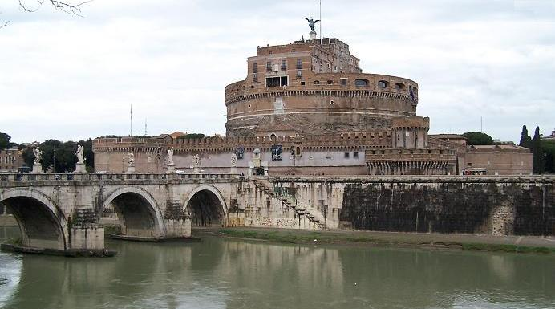
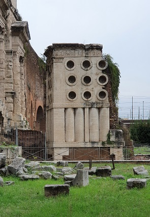
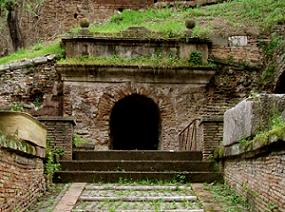
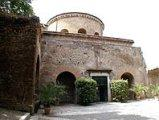

|
Mausoleo Augusto
El túmulo de los Julios. Mausoleo, los romanos lo llamaron así por la tumba del rey Mausolo. Estaba revestido de piedra. Tiene una altura de unos 44m, de forma circular construido en la zona del Campo de Marte, que ocupaba una hectárea y originalmente estaba recubierto de mármol blanco.
El primero en reposar aquí fue
Marcelo, Agripa, Octavia, … Augusto, …
Mausoleo de Adriano

Fue edificado por Adriano como
mausoleo para él y su familia. La construcción se inicio en el 130 y fue
terminada en el 139 por Antonino Pio. Construido con travertino, estaba
engalanado por una cuádriga en bronce guiada por el emperador Adriano. El
mausoleo era un gran podio cuadrado, sobre el que se levantaban los cilindros
ajardinados. Posteriormente el edificio cambió de uso y se convirtió en un
edificio militar. En el 403 se integró a la Muralla Aureliana.
Tumba Cecilia Metela Cecilia Metela fue el nombre de las mujeres que pertenecieron a la familia romana de los Cecilio Metelo.
Pirámide de Cestio Evoca a las pirámides egipcias. Era la tumba de Cayo Cestio Epulón, petror y tribuno del pueblo. La pirámide se construyó con ladrillos y se recubrió de mármol blanco, su estructura mide alrededor de 30 metros de lado, y alcanza una altura de 36,40m, se edificó en el año 12 a.e.c. La tumba está decorada con frescos. En el siglo III se incorpora a la Muralla Aureliana de Roma. Se halla junto a la Porta San Paolo y está cerrada al público
Tumba del panadero La Tumba del Panadero o Tumba de Eurísaco es como se conoce a la tumba de Marco Virgilio Eurysaces, un liberto que seguramente logró hacer fortuna suministrando pan. Se alza detrás de la Porta Maggiore. La tumba se construyó alrededor del 30 a. e.c Tiene un podio de bloques de toba; la parte superior es de travertino sobre un núcleo de hormigón. La decoración elegida hace alusión a la profesión del comitente, observándose sucesivos agujeros practicados en la fachada, semejando las bocas de un horno, así como un friso decorado con las diferentes fases de la cocción del pan.

Tumba de los Escipiones Era la tumba de la familia Escipión desde principios del siglo III a.e.c. hasta comienzos del siglo I. Se halla en la vía Apia, a poca distancia de la Porta San Sebastiano.

Mausoleo de Santa Costanza Mausoleo construido en el segundo
cuarto del siglo IV para la hija del emperador Constantino; junto a la antigua
Basílica de Santa Inés. Se conservan los mosaicos de la bóveda y los de las
exedras.  Catacumbas
Las catacumbas son unas galerías subterráneas que se construyeron y utilizaron como lugar de enterramiento. Las más conocidas son las catacumbas de la ciudad de Roma. En el Siglo I las familias romanas pobres, cristianas y paganas, se asocian en cooperativas para enterrar a sus muertos en estas cuevas de tufo. Los cristianos amortajaban a sus muertos con telas empapadas en “aqua lixiva”, una especie de solución de lejía y los colocaban en nichos, “loculi” superpuestos. En ellas se enterraron los muertos de los primeros cristianos en la Roma del finales del siglo I.
Principales catacumbas de Roma:
San Calixto. Las catacumbas de San Calixto se extienden a lo largo de 17Km en cuatro niveles diferentes. El emperador Comodo, cediendo a los ruegos de su amante Marcia, una cristiana muy emprendedora, liberó a los cristianos condenados a trabajos forzados en las minas. Calixto, un esclavo procesado por fraude y alboroto en una sinagoga, consigue escapar con ellos. El papa Zephyrinus nombra a Calixto diácono y guardián del cementerio. La catacumba pasa a ser el primer cementerio reconocido jurídicamente como propiedad de la Iglesia. Calixto es nombrado Papa y muere el 222. El área de mayor interés es la cripta de los Papas, donde fueron enterrados los cinco de los primeros papas que reinaron entre los años 230 y 283, y la cripta de Santa Cecilia. El culto a Cecilia se debe a la leyenda sobre su vida y su muerte. Cecilia convierte al cristianismo a su marido y lo convence para vivir en castidad. Cecilia es condenada a morir ahogada en su balneario del Trastevere. Sobrevive y se recupera cantando himnos, por esta razón es la Santa Patrona de la Música. También destacan las pinturas murales de los siglos II-III en la cripta del Sacramento y en la de Lucina.
San Sebastián. En este lugar se encontraron las primeras tumbas cristianas. Se las conoce como catacumbas por el nombre del valle donde fueron excavadas. Ocupan cuatro niveles diferentes, como las de San Calixto. Las salas más importantes están decoradas con pinturas, que datan de los primeros años del cristianismo, grafitos, estucos y mosaicos. Del Siglo I datan tres mausoleos para cristianos y paganos.
Priscila. Son de la misma época que las Catacumbas de San Calixto. Destacan sus antiguos frescos: "La Virgen con el Niño Jesús" (210) y escenas del Nuevo Testamento (siglo III ).
Domitila. Santa Domitila, a pesar de se familia los emperadores Domiciano y Vespasiano y ser miembro de la familia Flavia, murió martirizada en el año. Esta red de catacumbas es la mayor y tal vez la más antigua de Roma. Muchas de sus tumbas no tienen vínculos cristianos. Toma su nombre de la Santa por hallarse en un terreno de su propiedad. Destaca la tumba de una mujer decorada con frescos del siglo IV que representan a San Pedro y San Pablo. Bajo el arco de la tumba, visible si nos arrodillemos, está representada la Última Cena. Solo dos de los cuatro niveles están abiertos al público.
|